Malaysia is a federation of thirteen states and three federal territories, which form the primary administrative divisions of the country. Eleven states and two territories are part of Peninsular Malaysia, while two states and one territory make up East Malaysia.

Located in the south of Peninsular Malaysia, Johor is famous for its beaches, traditional dance zapin, and delicious laksa Johor.

The largest state in Malaysia, famous for its rainforests, longhouses, and cultural diversity.
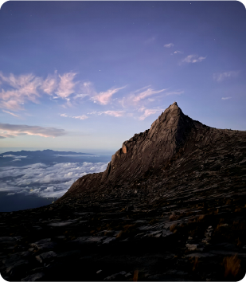
Located in Borneo, known for Mount Kinabalu, rich wildlife, and diverse indigenous culture.
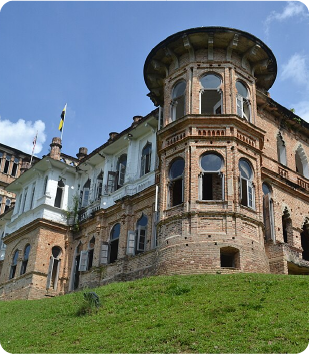
Known for limestone hills, royal town Kuala Kangsar, and the historic city of Ipoh.
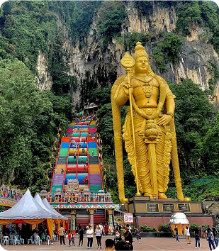
Selangor is Malaysia’s most developed state. It is known for attractions like Batu Caves, Sunway Lagoon, and Shah Alam Mosque
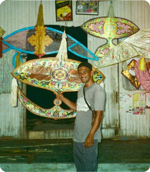
Famous for traditional Malay culture like wau, wayang kulit, and tasty nasi kerabu.
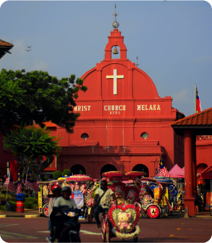
A UNESCO World Heritage City, known for its historical buildings, A Famosa, and Peranakan culture.
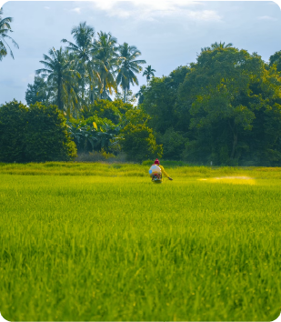
Known as the “Rice Bowl of Malaysia”, Kedah is rich with paddy fields and heritage sites like Langkawi Island.
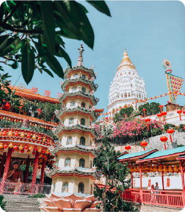
A food paradise with colonial heritage, street art, and George Town, another UNESCO World Heritage Site.
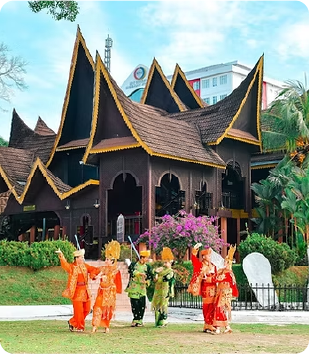
Known for Minangkabau architecture and adat perpatih, a unique matrilineal culture.
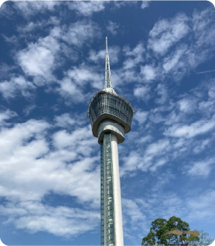
The largest state in Peninsular Malaysia, home to Cameron Highlands and Taman Negara rainforest.
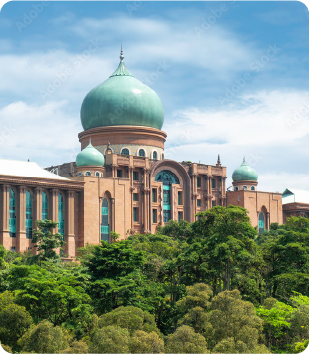
Malaysia’s administrative capital, known for smart city planning, modern architecture, and scenic bridges.
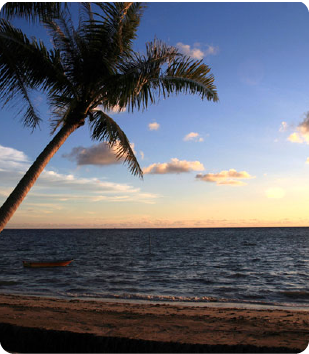
An island territory off the coast of Sabah, known for its beautiful beaches, duty-free shopping, and peaceful island atmosphere.
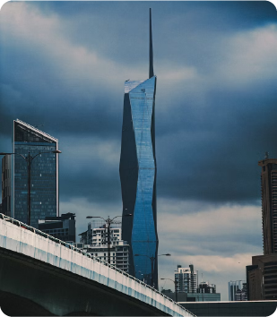
Kuala Lumpur is the capital city of Malaysia, famous for its modern skyline and cultural diversity. It is home to iconic landmarks such as the Petronas Twin Towers and the newly built Merdeka 118, second tallest buildings in the world.
© 2025 Syahreel Reza. All Rights Reserved. For Educational Purposes Only.